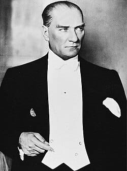
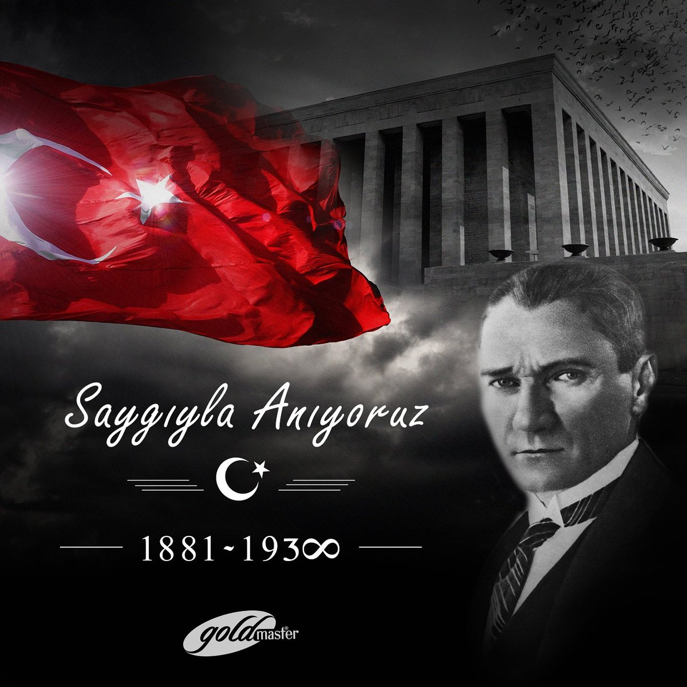

▂▃▅▇█▓▒░۩۞۩ Atatürk'e Mektup | Türkçe Proje ۩۞۩░▒▓█▇▅▃▂
🌹Merhabalar,bu Web site bir Türkçe Projesi adına tasarlanmıştır.Bu Web sitede "Atamıza Mektup" adında bir mektup ve onun osmanlıcası vardır.Umarım sizler beğenirsiniz,umarım Türkçe hocamız da bunu beğenir.Serice mektubumuza geçelim.🌹
Atamıza Mektup
Saygılı Atam;
Size milyonlarca soru sormak isterdim.Ama bu mektupda sizin başarılarınızı dahi sığdıracak yer olmadığından ben de çok fazla soru yazamam.
Sizin ileri görüşlülüğünüz,cesaretiniz,kahramanlığınız tüm Türk milletini diğer sömürgeci devletlerden kurtardı.Size soracak sorularım olsa kesin şunları sorardım;Nasıl bu kadar özgüvenliydiniz?Hastayken bile liderlik ruhunuzu bozmadan bu mantıklı ve devrimci adımlarınızı nasıl attınız?Bu kadar dili nasıl öğrendiniz?Size göre kitap okumak neden ve ne kadar önemli?Türk silah arkadaşlarınız ile bu vatanı nasıl bu derece kafadar olup korudunuz?
Söz konusu savaş olunca aslında aklıma ve aklımıza ilk gelen şey sizin kahramanlıklarınız gelir akla.Buğday gibi sarı,okyanus gibi masmavi gözlerinle tüm herşeyi görüp gözlerini çevirmedin ve buna karşı koydun!O sapsarı saçların gibi olan buğday tarlalarını korudun,savaştın ve bize bu sevinçli zaferi peşinden getirdin.Onurla ve destanlar yazarak çıktın savaşlardan!
Şimdi bizler yeni nesil senin açtığın bu yolda yürüyoruz.Sizin açtığınız bu yol o kadar büyük ki tarihin Osmanlı'dan sonrası sensin!Atam,Sen bizim en büyük atamızsın ve nice nesiller boyunca da en büyük komutanımız,başkanımız ve atamız olarak da kalacaksın.Huzur içinde uyu Büyük Türk Milletinin Gazi Mustafa Kemal Atatürk'ü!

🐺İşte bu mektubun o zamanlardaki hali (-/tam 🐺Osmanlıca🐺 havası vermek için normalinden birkaç değişiklik yaptım umarım beğenirsiniz :) -\);
Atamıza Mektup
Saygılı Atam;
Size binlerce sual sormak isteridim.Emmi bu mektupta sizin başarılarınızı dahi sığdıracak kadar yer bulunmadığından ben ise o kadar suali yazamam.
Sizin ileri görüşünüz,yiğitliğiniz,kahramanlığınız tüm Türk ulusunu diğer sömürgeci devletlerden kurtardı.Size sual edebilecek olsam size şunları sual ederidim;NAsıl bu kadar yiğit idiniz?Hasta iken dahi önderlil ruhunuzdan şaşmadan bunca mantıklı ve devrimci hamlelerinizi nasıl atmış idiniz?Bunca dilleri nasıl öğrendiniz?Size göre kitap okumak neden ve ne kadar mühimdir?Türk silah arkadaşlarınız ile bu ulusu ve vatanı nasıl çokça kafa verip bir olarak korumuşdunuz?
Kelam konusu harp olunca aslında aklıma ve bizim aklımıza önce en başta gelen sizin kahramanlıklarınız gelir akla ve aklımıza.Altınbaşlar gibi sarı,deryalar gibi masmavi gözlerinizle tüm herşeyi görüp gözlerinizi devirmediniz ve buna karşı koydunuz!O sapsarı saçlarınız gibi olan altınbaş tarlalarını kolladın,harp ettin ve bizlere bu mutlu haberi peşinden sürükledin.Onurla ve destanlar yazarak çıktın o harplardan!
İmdi bizler yeni kuşaklar senin açtığın bu yolda bizler yürüyoruz.Sizin açtığınız bu yol o kadar büyüktür ki tarihin Osmanlı Devleti'nden sonrasın sen isin!Atam,Senki bizim en büyük atamızsın ve nice kuşaklar boyunca da en büyük önderimiz,başkanımız ve atamız olarak da kalacaksın.Huzur ve rahatlık içinde uyuyasın Büyük Türk Ulusunun Gazi Mustafa Kemal Atatürk'ü!
Web sitemiz bu kadardı umarım beğenmişsinizdir.Kendinizi iyi bakın hoşçakalın👋👋👋
▂▃▅▇█▓▒░۩۞۩ Hazırlayanlar | Emeği Geçenler ۩۞۩░▒▓█▇▅▃▂
Mektup:Ömer Faruk DAĞ
Çeviren:Taha Eymen SAĞIR
Görseller:Ömer Faruk DAĞ
Kodlama:Taha Eymen SAĞIR
🌹Bizden desteğini esirgemeyen Github'a teşekkürler🌹
